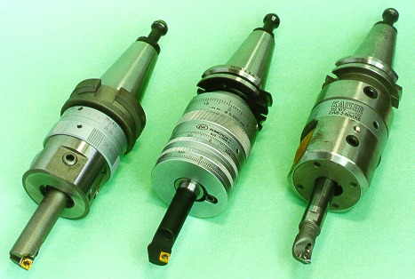

LMP>Linhas de Pesquisa>USICAV>Mandrilamento com Cabeçote de Excentricidade Regulável e Sistema de Balanceamento
OBJETIVOS Embora as ferramentas de mandrilar raramente cheguem a 15 % do total
de ferramentas envolvidas na usinagem, são de extrema importância à produtividade
de um processo. Uma vez que o mandrilamento é um processo freqüentemente
empregado na usinagem final de peças, que já adquiriram um
elevado valor agregado através de horas de usinagem prévia,
a produção de refugos neste estágio é altamente
indesejável. PROCEDIMENTOSO desbalanceamento de cabeçotes de mandrilar causado pela excentricidade
da ferramenta de corte influi no nível de vibração
da máquina, o que por sua vez influi na qualidade da superfície
e na precisão de forma dos furos usinados. Com o intuito de contribuir
para a otimização do processo de mandrilamento de precisão,
pretende-se comparar o comportamento dos cabeçotes de mandrilar
mais conhecidos no mercado. Todos os cabeçotes de mandrilar selecionados
apresentam possibilidade de regulagem da excentricidade da ferramenta,
sendo destinados ao mandrilamento de furos na faixa de 10 a 25 mm de diâmetro.
Alguns dos cabeçotes possuem sistema de balanceamento integrado. Cinco são os aspectos de interesse neste trabalho:
 Cabeçotes de mandrilar |
| Contato:
USICAV Rolf Bertrand Schroeter Prof. Dr. Eng. |
Última Atualização 21.06.2006 |